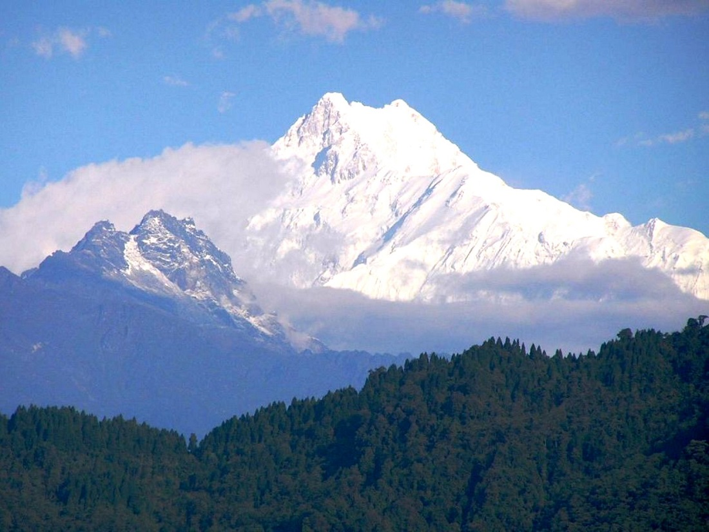

5 САМЫХ ВЫСОКИХ ГОР
Альпинисты говорят, что в горах особенная тишина, которая имеет волшебное звучание, оно манит к себе и заставляет покорять вершины гор с еще большей страстью.


Невероятные пейзажи
№5. Макалу (Гималаи) - 8485 метров.
Макалу - пятая по высоте вершина в мире. Расположена в центральных Гималаях, на границе Непала с Китаем (Тибетский автономный район). Первые попытки восхождения начались в середине 50-ых годов 20 века. Это можно объяснить тем, что большинство экспедиций хотело покорить Джомолунгму и Лхоцзе, а Макалу и другие менее известные соседние вершины оставалась в тени. Первая успешная экспедиция случилась в 1955 году. Французские альпинисты под руководством Лионеля Террая и Жана Кози покорили вершину 15 мая 1955 года. Макалу - одна из самых трудных вершин для восхождения. Успеха добиваются менее 30% экспедиций. На сегодняшний день на вершину Макалу проложено 17 различных маршрутов.
№4. Лхоцзе (Гималаи) - 8516 метров.

Лхоцзе - четвертая по высоте вершина в мире, высотой 8516 метров. Находитсяна территории Тибетского автономного округа.
Первое успешное восхождение было совершено 18 мая 1956 года швейцарской экспедицией в составе которой были: Эрнст Райсс и Фриц Лухсингер.
Из всех попыток восхождения на Лхоцзе успехом увенчались лишь 25%.
№3. Канченджанга (Гималаи) - 8586 метров.
Канченджанга занимает третью строчку в рейтинге самых высоких вершин мира. Высота вершины - 8586 метров. До 1852 года Канченджанга считалась самой высокой вершиной мира, но после расчетов, выполненных на основе данных экспедиции 1849 года, было доказано, что самая высокая гора - Эверест. Впервые гору Канченджанга покорили 25 мая 1955 года Джордж Бэнд и Джо Браун. На всех вершинах мира существует тенденция снижения смертности с течением времени, но Канченджанга - исключение. В последние годы смертность при восхождении на вершину достигла 23% и только растет. В Непале существует легенда, что Канченджанга — гора-женщина, которая убивает всех женщин, пытающихся подняться на её вершину.
№2. Чогори (Каракорум) - 8614 метров.
Чогори - вторая из самых высоких вершин в мире. Чогори впервые была обнаружена европейской экспедицией в 1856 году и была обозначена как гора К2, то есть вторая вершина Каракорума.
Первая попытка восхождения была совершена в 1902 году Оскаром Эккенштейном и Алистером Кроули, однако закончилась неудачей.
Покорение вершины произошло в 1954 году итальянской экспедицией под руководством Ардито Дезио.
На сегодняшний день на вершину К2 проложено 10 различных маршрутов.
Восхождение на Чогори является технически намного более сложным, чем восхождение на Эверест.
По опасности гора занимает второе место среди восьмитысячников после Аннапурны, коэффициент смертности составляет 24%. Ни одна из попыток восхождения на Чогори зимой не увенчалась успехом.
№1. Джомолунгма (Гималаи) - 8848 метров.
Джомолунгма (Эверест) - высочайшая вершина Земли. В переводе с тибетского «Джомолунгма» - «Божественная (jomo) Мать (ma) жизненной энергии (lung)». Гора названа так в честь бонской богини Шераб Чжаммы. Английское название «Эверест» было дано в честь сэра Джорджа Эвереста руководителя геодезической службы Британской Индии в 1830—1843 годах. Это название предложил в 1856 году преемник Джорджа Эвереста Эндрю Во после публикации результатов своего сотрудника Радханата Сикдара, который в 1852 году впервые измерил высоту «Пика XV» и показал, что тот является высочайшим в регионе и, вероятно, во всём мире. До момента первого успешного восхождения на вершину, которое состоялось в 1953 году, было проведено около 50 экспедиций в Гималаи и Каракорум (на Джомолунгму, Чогори, Канченджангу, Нангапарбат и другие вершины). 29 мая 1953 года Эверест покорил новозеландский альпинист Эдмунд Хиллари и шерпа Тенцинг Норгей. В последующие годы высочайшую вершину мира покорили альпинисты разных стран мира — СССР, КНР, США, Индии, Японии, и других стран. За все время при попытках восхождения на Эверест на нем погибло более 260 человек. Тем не менее, ежегодно Джомолунгму пытаются покорить более 400 человек.